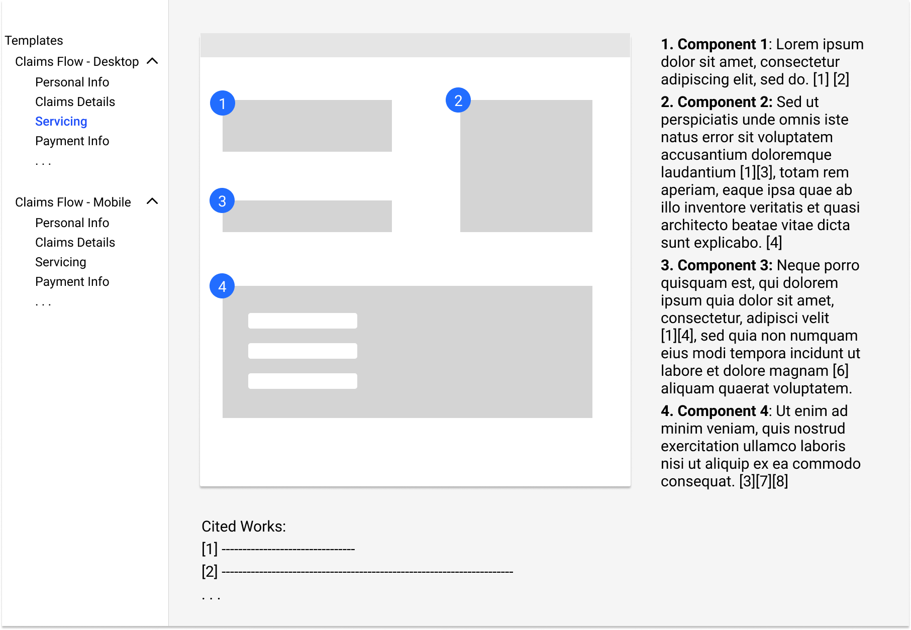

<!DOCTYPE html>
<html>

<head>
    <meta charset="UTF-8" />
    <meta name="viewport" content="width=device-width, initial-scale=1.0" />
    <meta name="description" content="Kristi's Portfolio" />
    <link href="./css/montserrat.css" rel="stylesheet">
    <link rel="stylesheet" href="./styles.css">
    <title> Kristi Lin </title>
    <link rel="icon" href="images/favicon.svg" />

</head>
<style>

</style>

<body>

    <div id="header">
        <a href="./index.html">  </a>
        <div id="nav-links">
            <a class="nav-link selected-nav" href="./index.html">Work</a>
            <a class="nav-link" href="./about.html">About</a>
            <a class="nav-link"
                href="https://www.dropbox.com/scl/fi/pbslevpfwvkz8u9e9sm48/Kristi_Lin_resume.pdf?rlkey=8qvhly1wrfr9osx3blylahv7m&st=6oex3bx5&dl=0"
                target="_blank">Resume</a>
        </div>
    </div>

    <div class="project-body ease-in">
        <div class="project-paragraph">
            <h2>
                Assurant: Expanding the Digital Design System
            </h2>
            <p>
                A design team project to provide our client, Assurant – a global insurance and risk management company –
                with design research to expand upon their digital
                design system. Our focus
                was to better understand the user and task flow of filing insurance claims, and to compile our UX
                research into midfidelity templates. Ultimately, our team delivered 7 desktop and 7 mobile mid-fi
                wireframes annotated with cited 'best
                practices' research, fully ready to be integrated into the company's current digital design system on
                Sketch.
            </p>
            <p>
                Due to confidentiality, research conclusions are omitted and images are generic.

            </p>
        </div>

        <div id="ux-methods">
            <p> Design Audit</p>
            <p>&#x2022;</p>
            <p> Competitive Analysis</p>
            <p>&#x2022;</p>
            <p> Usability & UX Research</p>
            <p>&#x2022;</p>
            <p> Wireframing</p>
            <p>&#x2022;</p>
            <p> Low to mid-fi Prototyping</p>
            <p>&#x2022;</p>
            <p> Documentation</p>
        </div>

        
        <p class="subcaption"> A brief outline of the design template. Each page details a screen of the insurance
            claims flow, with each component annotated with UX standards and best practices. </p>

        <div class="project-paragraph">
            <h3>
                Project Highlights
            </h3>
            <p>
                🏆 Delivering industry specific UX research findings backed by a multitude of UX industry standard
                sources (Nielson Norman, Interaction Design Foundation, etc.)
            </p>
            <p>🏆 Compiling well-cited design recommendations in addition to UX design standards.</p>
            <p>🏆 Honing project scope to deliver research for the seven insurance claims screens that had highest
                impact in consumers' experiences.</p>

        </div>

        <a class="project-paragraph" href="./index.html"> &larr; Return Home</a>

    </div>


    <div id="footer">
        <a href="https://www.linkedin.com/in/kristiflin/" target="_blank"></a>
        <a href="https://github.com/kristiflin" target="_blank"></a>
        <a href="mailto:kfl29@cornell.edu" target="_blank"></a>
    </div>


</body>

</html>